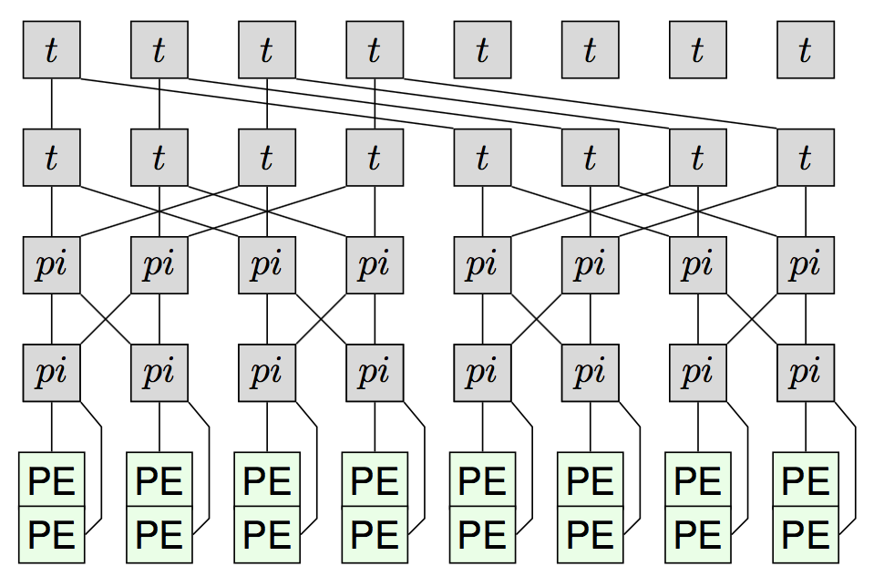
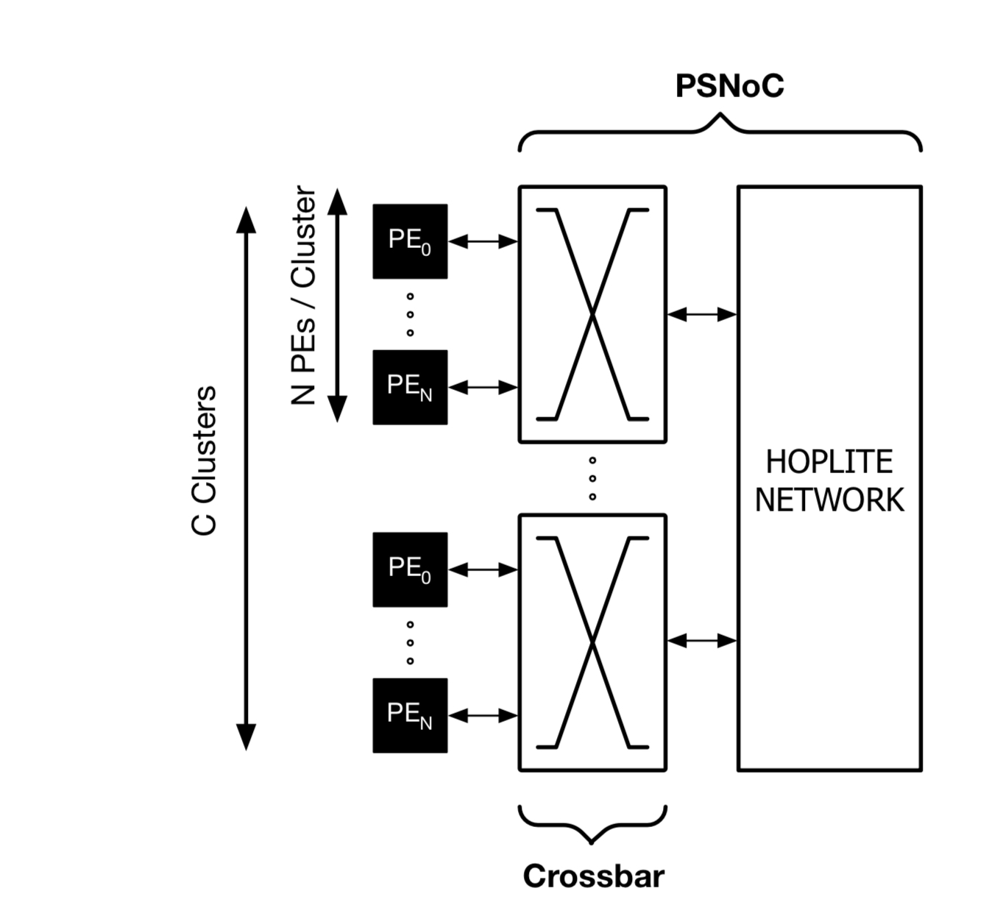
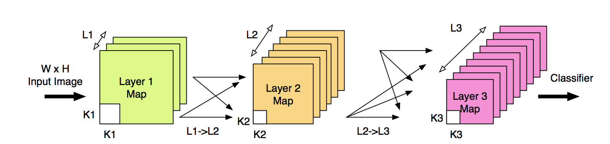
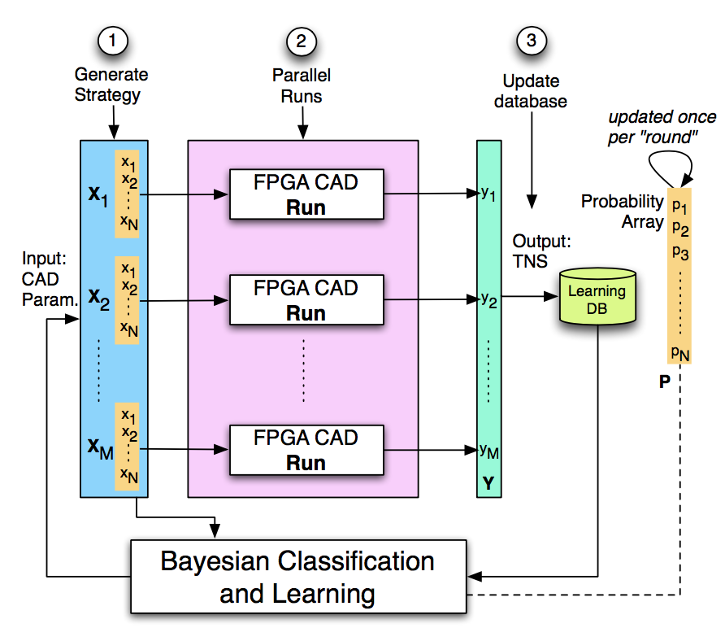

In the Waterloo Configurable Architectures Group (WatCAG), we are broadly interested in understanding and exploiting the potential of spatial parallelism for implementing computation using reconfigurable architectures such as FPGAs. Reconfigurable computing has now come of age with the multi-billion dollar acquisition of Altera by Intel, and rapid adoption of FPGAs in the cloud at Microsoft, Amazon, Huawei, Baidu, Alibaba among other cloud providers. With the rising computing demands of machine learning workloads coupled with the pending demise of Moore’s Law, there has never been a more exciting time to work in this field than today.
In the WatCAG group, we ask the following big questions:
The group has investigated the design and engineering of token dataflow overlays, vector processor characterization, embedded system evaluation, real-time systems, and FPGA-specific network-on-chip architectures for use in accelerators.

Token dataflow architectures exploit application parallelism dynamically at the granularity of individual instructions. Each instruction implements a dataflow firing rule that replaces a program counter used in conventional sequential CPU processing. The dataflow dependencies are routed over a operand routing network-on-chip to rapidly move data to parallel compute blocks within the chip. The design and engineering of hardware-friendly dataflow building blocks for FPGAs has been a focus of our group.

We are excited about novel uses of FPGAs in emerging application scenarios in the cloud as well as embedded contexts. The group has published papers in machine learning,

The group has developed various automation tools, compiler passes, and frameworks for use with FPGAs. In particular, we have tools to perform precision analysis, performance tuning, machine-learning driven FPGA compilation, among other solutions.
